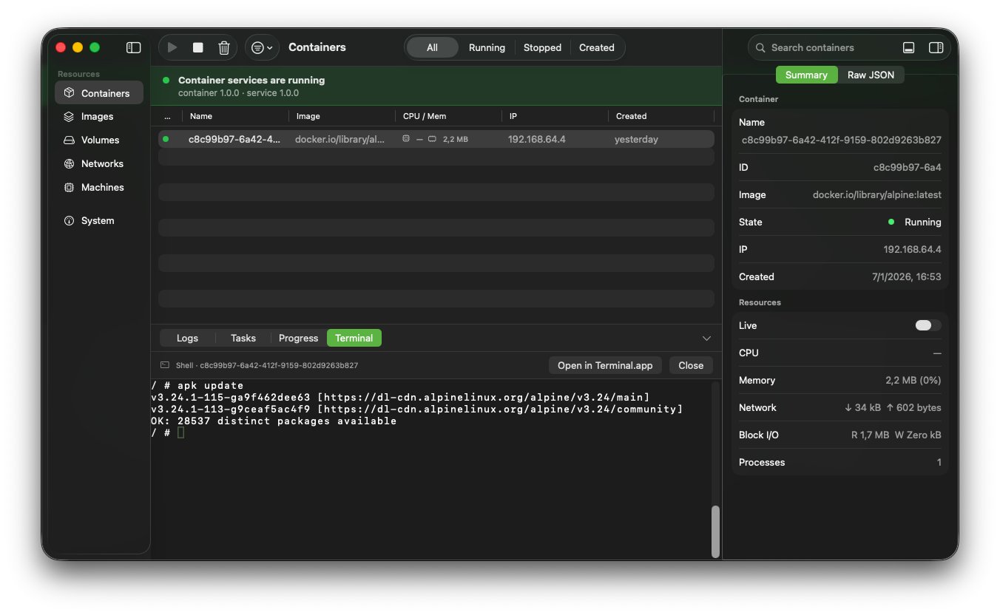
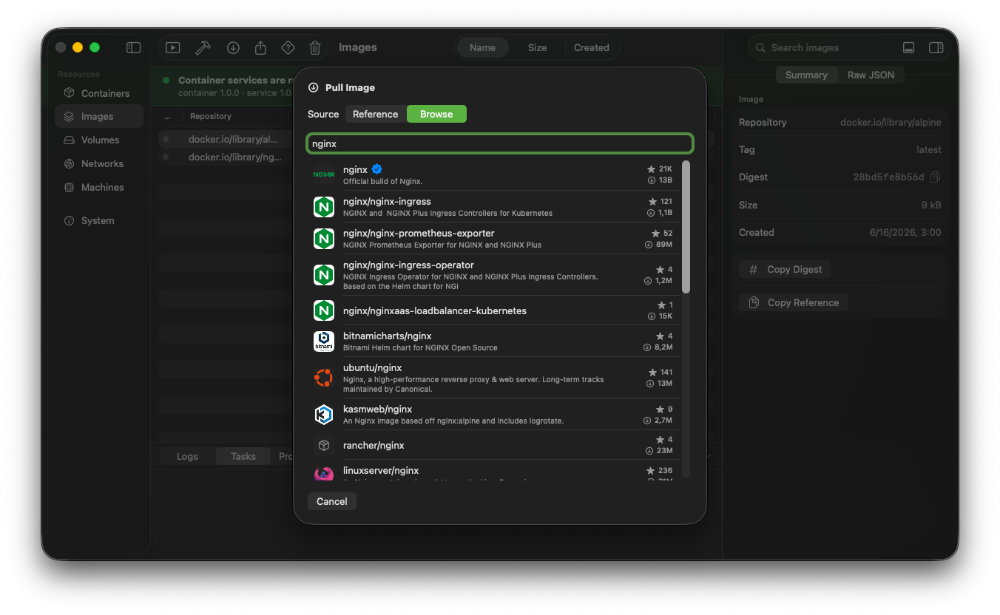
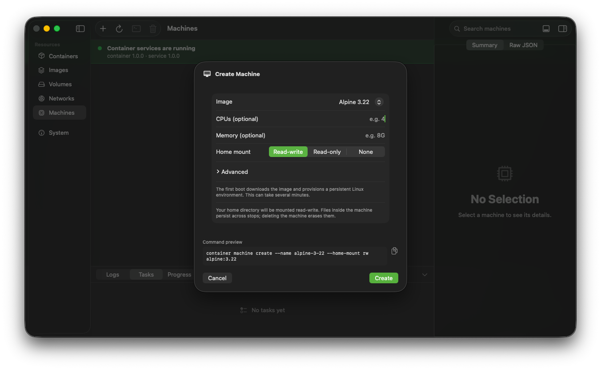
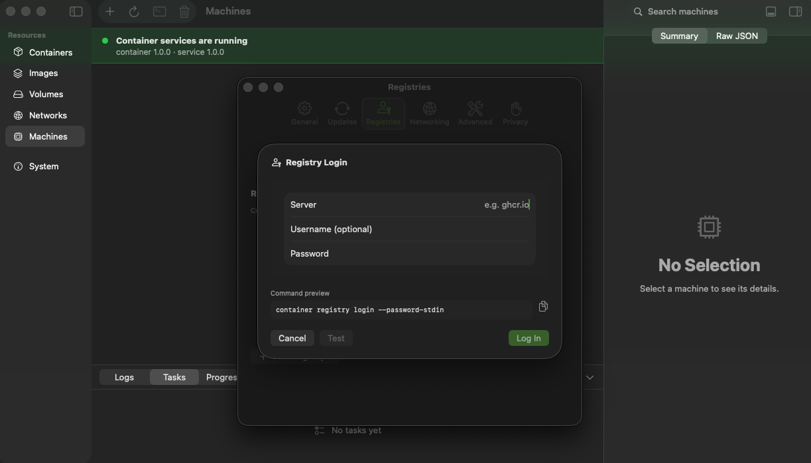
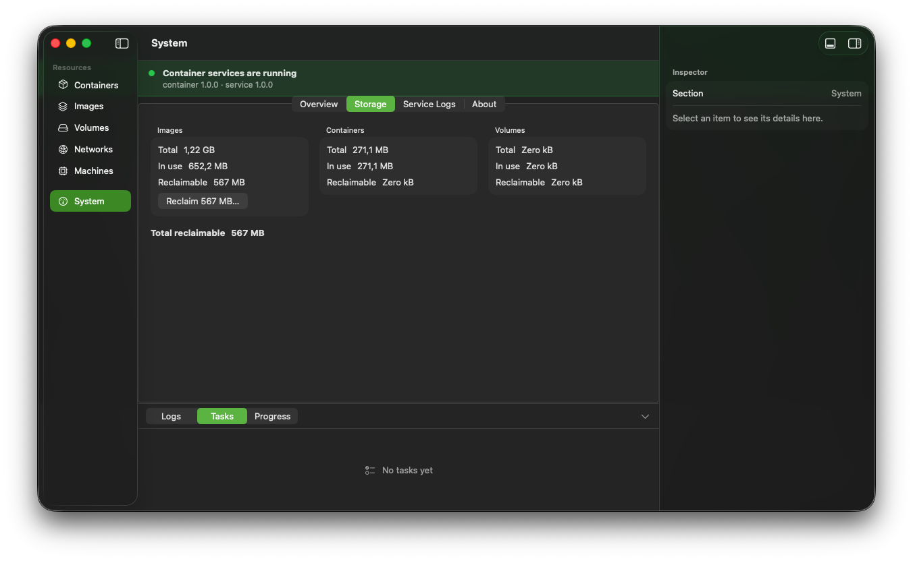

container CLI.Browse and manage containers, images, volumes, networks and machines in a real macOS window — with an embedded terminal and a command palette for everything else.





Containers, images, volumes, networks and machines — searchable, inspectable, updating in real time.
Exec into a container or open a shell without ever leaving the window.
⌘K for anything, with a faithful preview of the exact container command being run.
Drive it from Shortcuts, AppleScript or an App Intent — every action is automatable.